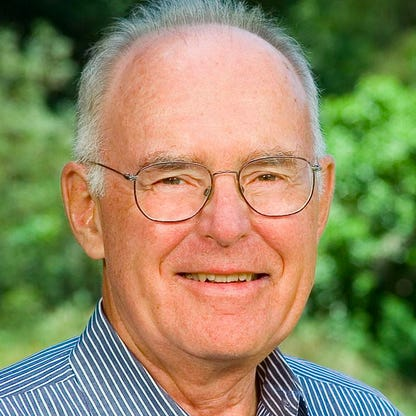

|  | |
| Date of Birth | January 3, 1929 |
|---|---|
| Education | University of California, Berkeley (BS, 1950) |
| California Institute of Technology (PhD, 1954) | |
| Technological Contributions | Founder of Intel |
| Moore's Law | |
Gordon Moore was born in San Francisco, California in 1929. He grew up nearby in Pescadero, where his father worked as the local Sheriff.
Later, his father was promoted to the county's Chief Deputy Sheriff.
After moving to Redwood City, Moore was introduced to chemistry through his neighbours' chemistry set, and spent hours happily making explosives.
He continued to study chemistry, and it soon became his passion. Causing him to study it throughout high school and college.
He first attended San José State College, for two years, before he transferred to the Univeristy of California Berkeley.
Whilst in San José State College, he met his wife, and they married in 1950.
His first job was at the Johns Hopkins Institute in Laurel, Maryland, where he examined the physical chemistry of solid rocket fuel used
by the US Navy in anti-aircraft missiles.
However, Moore soon decided that working in private industry would be far more exciting, with greater rewards.
In 1956, Moore started working for Shockley Semiconductor Laboratory, which had financial backing from Arnold O. Beckman.
At Shockley Semiconductor, Moore specialised in the complex solid-state processes for diffusing tiny impurities into silicone.
However, after just a year, alongside other scientists and engineers, rebelled against the company for Shockley's heavy handed approach.
When Arnold O. Beckman refused to replace Shockley, the group found another backer, Fairchild Camera and Instrument, and formed Fairchild Semiconductor.
This group later became known as the 'Traitorous Eight'.
In 1968, Moore along with Robert Noyce, who had been his colleague since Shockley, created NM Electronics, which later went on to
become Intel Corporation. Intel initially focused on creating semi-conductor based memory for computers, however when Japanese competitors
became more competent, Intel switched its emphasis to microprocessors.
The Gordon and Betty Moore Foundation was established by Moore and his wife in 2000, with an initial gift of roughly $5 billion.
The foundation currently has over $6 billion in assets, and gives away roughly $300 million in grants each year.
The grants typically focus on environmental projects, where they have supported major projects in the San Francisco Bay Area and in the Andes-Amazon Basin.
In addition to this foundation, Moore has also supported Caltech, with total donations totalling over $800 million. In 2007, they donated
$200 so that Caltech could build the largest telescope in the world.